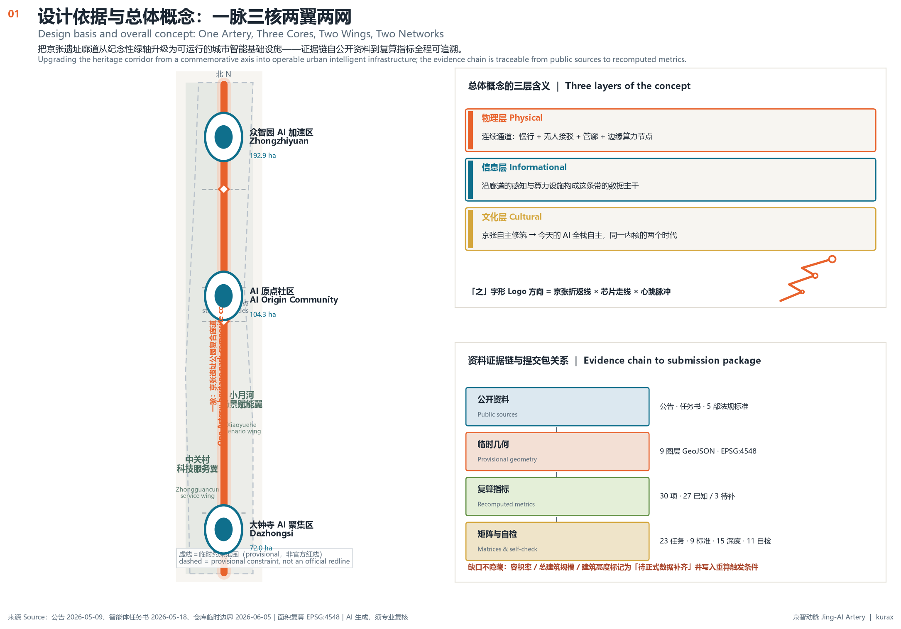
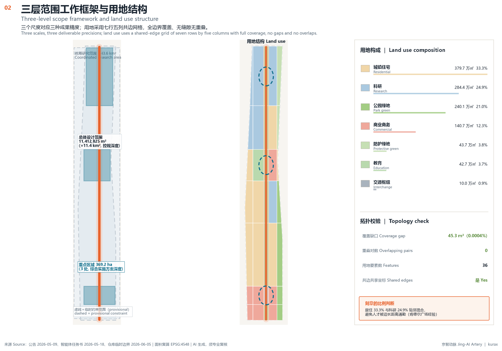
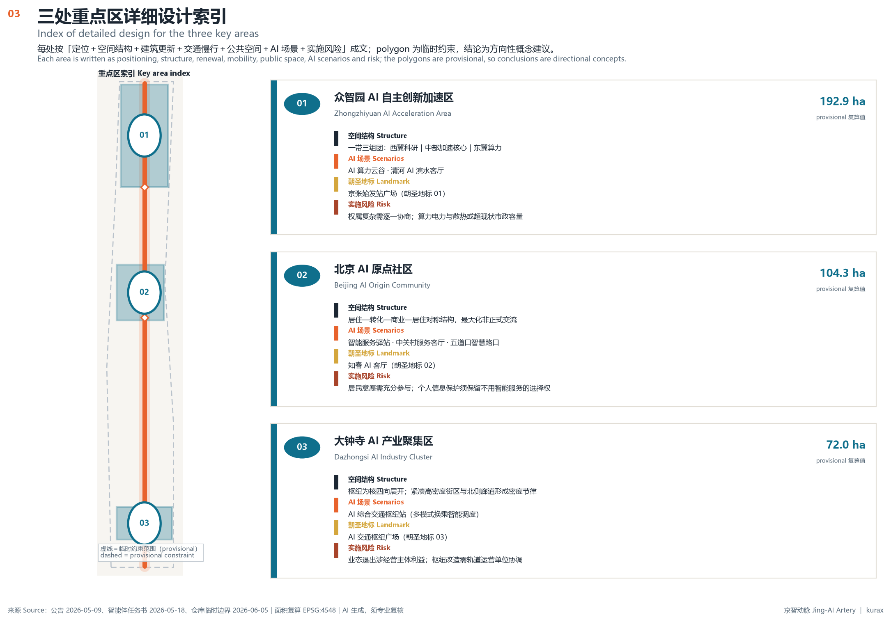
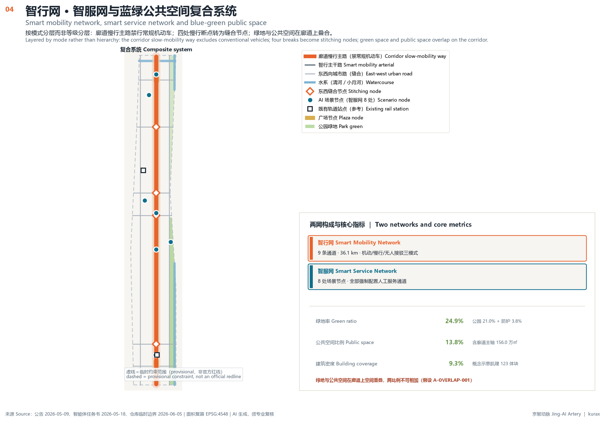
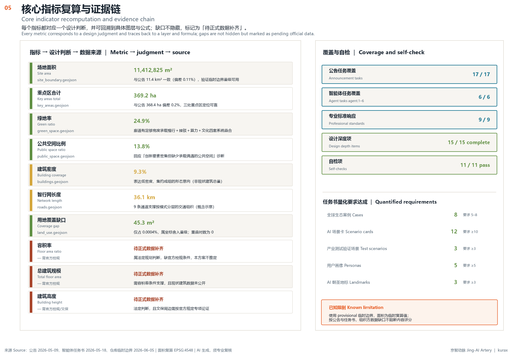

Upgrading the Jing-Zhang railway heritage corridor from a commemorative green axis into operable urban intelligent infrastructure — a composite artery carrying slow mobility, autonomous shuttles, edge computing and civic service agents at once — linking the Zhongzhiyuan, AI Origin Community and Dazhongsi key areas into a structure of One Artery, Three Cores, Two Wings and Two Networks.
The north-south structural trunk, superimposing a continuous slow-mobility way, an autonomous shuttle loop, edge computing and sensing nodes, and cultural narrative nodes.
Three "ventricles" on the artery, each with independent function and operating rhythm, kept continuous through the corridor.
The west wing inherits existing innovation-service density; the east wing takes up waterfront openness and testing-ground demand, forming a service–validation pairing.
The mobility network covers motorized, slow and autonomous shuttle modes (9 channels, 36.1 km); the service network is anchored on 8 scenario nodes, every one required to provide a staffed service channel.
polygon_area(PROV-SITE-001, EPSG:4548)(park_green_1401 + protective_green_1402) / site_area_sqmsum(PUBLIC_SPACE polygon areas) / site_area_sqmbuilding_footprint_area_sqm / site_area_sqmsum(polygon_area(PROV-KEY-001..003), EPSG:4548)sum(line_length(ROAD_CENTERLINE), EPSG:4548)count(scenario cards in proposal)count(user personas in proposal)count(AI pilgrimage landmarks in proposal)count(global AI ecosystem cases in proposal)site_area_sqm - union_area(LAND_USE)total_floor_area / site_area_sqmsum(building_footprint * floors) — requires official controlsrequires official regulatory height control| Code | Category | Area (10k m²) | Share |
|---|---|---|---|
0701 | Urban residential | 379.7 | 33.3% |
0802 | Research | 284.4 | 24.9% |
1401 | Park green | 240.1 | 21.0% |
05 | Commercial | 140.7 | 12.3% |
1402 | Protective green | 43.7 | 3.8% |
0804 | Educational | 42.7 | 3.7% |
1207 | Urban road (interchange) | 10.0 | 0.9% |
Topology check: coverage gap 45.3 m² (0.0004%, coordinate rounding), zero overlapping pairs. Green space and public space overlap on the corridor, so the two ratios cannot be added.





192.9 ha
One belt, three clusters: west research | central acceleration core | east computing. Shared pilot facilities sit between clusters.
Landmark 01: Jing-Zhang Departure Station Plaza · Memorial Ground of Self-Reliant Innovation (with open-source contributor honour display)
104.3 ha
A symmetrical housing–conversion–commerce–housing structure, so the conversion district abuts living functions on both sides.
Landmark 02: Zhichun AI Lounge · Urban Agent Governance Laboratory (a publicly observable governance site)
72.0 ha
The interchange is the core with functions extending in four directions; a compact high-density block contrasts with the low-density corridor to the north.
Landmark 03: Dazhongsi AI Interchange Station · Intelligent Mobility Experience Gateway (start of the public experience route)
Serving everyone, reliability first, aiming at zero interruption
Inclusiveness first, human fallback as a hard constraint, aiming at zero exclusion
Controllability first, physical and temporal isolation as hard constraints, aiming at zero spillover
Algorithm researcher
Startup team member
Community resident (incl. many older residents)
Commuter and transferring passenger
International visitor and developer
Four unified hard boundaries: no collection of identity or biometric information; data isolated per scenario with no cross-scenario aggregation or profiling; any judgment affecting personal rights must pass human review, whose conclusion prevails; every intelligent service retains a non-intelligent alternative path.
| ID | Content |
|---|---|
agent.1 | 总体概念「京智动脉 Jing-AI Artery」、三名命名体系（京张轨/京智脉/京智核）、「之」字形Logo方向（京张折返线×芯片走线×心跳脉冲）、三大定位五大功能闭合协同回路、一脉三核两翼两网空间结构、国土空间规划三点创新思路。不含口号式命名，不照搬城市或企业名称，不使用未授权字体图片商标。 |
agent.2 | 8个全球AI创新生态案例（匹兹堡/国王十字/巴塞罗那/新加坡/清溪川/埃因霍温/肯德尔/虎之门）及可转化机制；五圈层生态图谱；土地空间产业资金人才算力数据场景八要素机制。不编造企业名单、投资额、产值或财政承诺。 |
agent.3 | 12张AI场景卡（含第10-12张产业测试验证场景）、5类用户画像、场景-空间-运营三层映射（基础层/服务层/验证层）、四条数据与人工复核硬边界。所有场景标注为概念建议，非已批准运营；人工兜底为硬约束。 |
agent.4 | 京张遗址公园AI公共空间、东西缝合与南北贯通策略、大钟寺智能原生业态、3个AI朝圣地标（自主创新纪念场/城市智能体治理实验室/智能出行体验入口）、开源贡献者荣誉展示体系、六类公共空间组件库。不给桥隧与工程可行性结论，形式克制不网红化。 |
agent.5 | 三文化同为「自主」一条线索的三阶段叙事（1909京张/1980s中关村/当下AI）、京张铁路文化资源系统、廊道时间序列主叙事线、「之」字形三尺度符号系统、文化标识与整体Logo明确区分、国际传播叙事。史实须文史机构审定，禁止模型自由生成。 |
agent.6 | 一主两辅年度活动体系（AI创新周/季度开发者聚会/月度场景开放日）、JIA Week品牌、开源与开放场景双向社区机制、场景开放清单与准入退出机制、公共体验路线、“可被观察的治理”国际传播与三段转化路径。全部表述为概念建议，不含政府承诺。 |
| ID | Content | Status |
|---|---|---|
PROJECT-OFFICIAL-ANNOUNCEMENT | 公告 1.3、1.4、1.5 对项目目的、三层范围、设计任务和成果深度提出主控要求。 | addressed |
PROJECT-AGENT-OPEN-CALL-TASKBOOK | 面向智能体任务书对十条共创原则、三大定位、五大功能、六项智能体任务、表达完整性和统一边界条款提出要求。 | addressed |
MOHURD-URBAN-DESIGN-MEASURES | 《城市设计管理办法》对城市设计的编制内容、空间形态引导和风貌管控提出要求。 | addressed |
MOHURD-CONTROL-DETAILED-PLANNING | 《城市、镇控制性详细规划编制审批办法》对控规的用地布局、指标体系和管控深度提出要求。 | addressed |
MNR-LAND-USE-CLASSIFICATION-GUIDE | 《国土空间调查、规划、用途管制用地用海分类指南》统一用地分类与代码口径。 | addressed |
MOHURD-ARCH-DESIGN-DEPTH-2016 | 《建筑工程设计文件编制深度规定（2016年版）》界定建筑设计各阶段的成果深度。 | addressed |
GENERATIVE-AI-INTERIM-MEASURES | 《生成式人工智能服务管理暂行办法》对生成内容责任、数据来源和人工干预提出要求。 | addressed |
BARRIER-FREE-ENVIRONMENT-LAW | 《中华人民共和国无障碍环境建设法》对无障碍设施与信息无障碍提出强制要求。 | addressed |
ELDERLY-SMART-TECH-PLAN-2020-45 | 《关于切实解决老年人运用智能技术困难实施方案》要求保留传统服务方式。 | addressed |
| ID | Content | Status |
|---|---|---|
existing_conditions_diagnosis | 现状条件诊断 | complete |
three_level_scope_framework | 三层范围工作框架 | complete |
overall_spatial_structure | 总体空间结构 | complete |
land_use_layout | 用地布局 | complete |
development_intensity_controls | 开发强度控制 | complete |
height_massing_character | 高度体量与风貌 | complete |
retain_renovate_demolish | 保留改造拆除新建分类 | complete |
traffic_rail_slow_parking | 交通轨道慢行停车 | complete |
municipal_new_infrastructure | 市政与新型基础设施 | complete |
blue_green_public_space | 蓝绿与公共空间 | complete |
three_key_area_detailed_design | 三处重点区详细设计 | complete |
renewal_project_list | 更新项目清单 | complete |
phasing_implementation | 分期实施 | complete |
metrics_recalculation | 指标与面积复算 | complete |
risk_missing_data | 风险与资料缺口 | complete |
| ID | Content | Note |
|---|---|---|
A-BOUNDARY-001 | 使用临时约束范围替代官方红线 组织方尚未公开总体设计范围与三处重点区的官方矢量红线，本方案使用仓库登记的 provisional_constraint 临时粗略 polygon 进行概念生成、可视化与自检。 | 官方矢量边界与重点区红线公布后，重新裁剪全部图层并重算上述指标。 |
A-CONTROLS-001 | 缺少官方控规条件 缺少容积率、建筑高度、配建指标等控规条件，本方案不推定这些法定规划数值。 | 获得官方控规条件后，由专业团队补充强度与高度指标。 |
A-CRS-001 | 坐标系与量算口径 几何以 EPSG:4326 交换，面积与长度在 EPSG:4548 投影下计算。 | 若组织方指定其他投影，需按其口径重算。 |
A-BUILDING-001 | 建筑体块为概念示意肌理 缺少现状建筑矢量与权属数据，buildings.geojson 中的体块为表达形态意向与组群关系的概念示意，不代表现状建筑总量。 | 获得现状建筑矢量与质量数据后，替换概念体块并重算。 |
A-ROAD-001 | 道路中心线为概念示意 roads.geojson 中的中心线用于表达智行网的模式分层与连通逻辑，不构成道路线形、红线或工程定线。 | 获得官方道路红线数据后重新绘制并重算。 |
A-OVERLAP-001 | 绿地与公共空间存在空间重叠 京张遗址公园复合廊道同时具有公园绿地与公共空间两种属性，因此绿地率与公共空间比例存在空间重叠。 | 若组织方要求互斥口径，需重新定义图层归属并重算。 |
A-HERITAGE-001 | 文保保护范围待官方明确 清华园车站旧址与大钟寺古钟博物馆的保护级别、保护范围与建设控制要求缺少官方数据，本方案仅作为约束条件标注位置。 | 获得官方文保保护范围与建控要求后，由专业团队专项论证。 |
A-MUNICIPAL-001 | 市政容量待正式数据补齐 缺少给排水、电力、燃气、通信的现状容量数据，本方案不做市政承载测算。 | 获得市政容量数据后，由专业团队完成承载评估。 |
| Source | Usability | Use here |
|---|---|---|
OFFICIAL-ANNOUNCEMENT百年京张AI创新带城市设计国际方案征集资格预审公告 | yes | 用于项目目的、三层范围、设计任务与成果深度的主控依据。 |
AGENT-TASKBOOK面向全球智能体开展“百年京张AI创新带城市设计开源征集”的任务书摘录 | yes | 用于三大定位、五大功能、三区两翼、六项智能体任务与统一边界条款。 |
BOUNDARY-SOURCE百年京张AI创新带三层范围与三处重点区临时粗略 polygon | provisional_only | 仅用于临时生成、可视化与自检；不可作官方红线、审批依据或精确面积计算。 |
KEY-AREA-SOURCE百年京张AI创新带三层范围与三处重点区临时粗略 polygon | provisional_only | 仅用于三处重点区的临时定位与面积示意；不可作官方重点区红线。 |
MOHURD-URBAN-DESIGN-MEASURES城市设计管理办法 | yes | 用于城市设计编制要求与成果深度判断。 |
MOHURD-CONTROL-DETAILED-PLANNING城市、镇控制性详细规划编制审批办法 | yes | 用于控规深度城市设计的判断依据。 |
MNR-LAND-USE-CLASSIFICATION-GUIDE自然资源部关于印发《国土空间调查、规划、用途管制用地用海分类指南》的通知 | yes | 用于 land_use_code 与用地分类口径。 |
GENERATIVE-AI-INTERIM-MEASURES生成式人工智能服务管理暂行办法 | yes | 用于 AI 场景的数据边界与人工复核要求。 |
BARRIER-FREE-ENVIRONMENT-LAW中华人民共和国无障碍环境建设法 | yes | 用于人工兜底通道与无障碍设计的强制要求。 |
ELDERLY-SMART-TECH-PLAN-2020-45国务院办公厅关于印发《关于切实解决老年人运用智能技术困难实施方案》的通知（国办发〔2020〕45号） | background_only | 仅作适老化服务设计的背景参考，不作本项目直接管控依据。 |
SITE-PACKAGE百年京张AI创新带 site-package（设计任务书、允许设计空间、枚举、schema、几何） | yes | 用于任务分解、字段口径、用地代码枚举与图层约定。 |
SOURCE-REGISTRY公开来源登记表 data/source_registry.json | yes | 用于区分 formal-ready、background_only 与 provisional_only 三类资料。 |
MOHURD-ARCH-DESIGN-DEPTH-2016建筑工程设计文件编制深度规定（2016年版） | yes | 用于界定本方案停留在城市设计概念阶段、不进入建筑工程设计深度的依据。 |